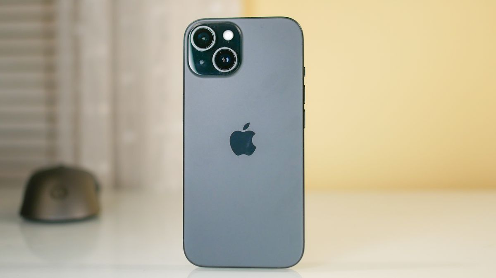
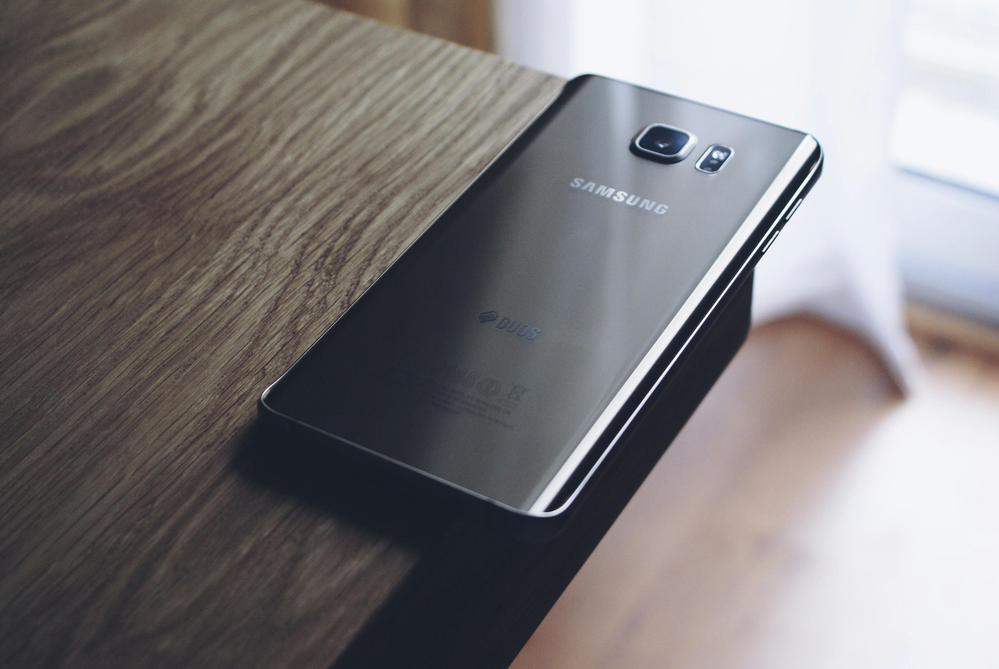
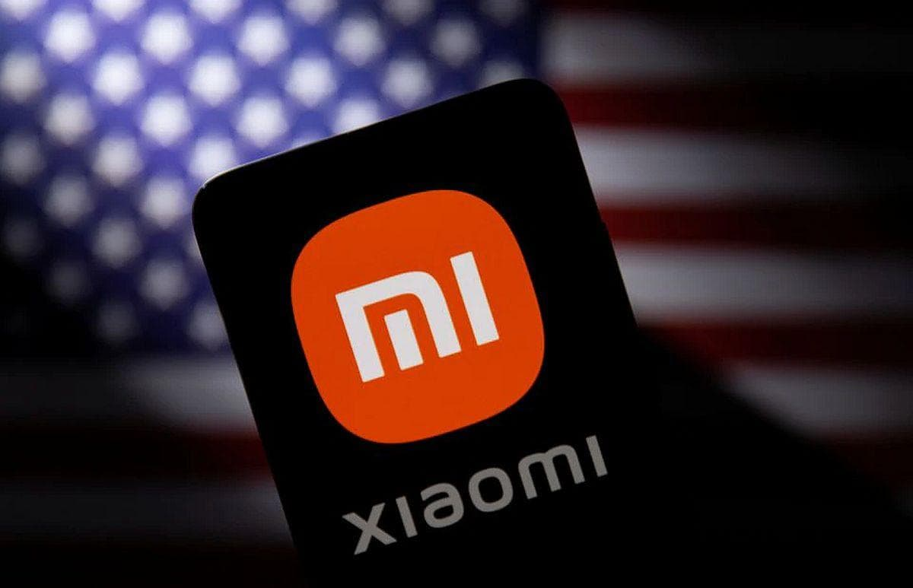
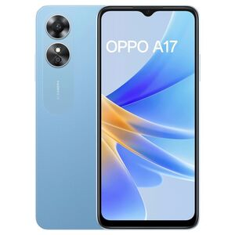
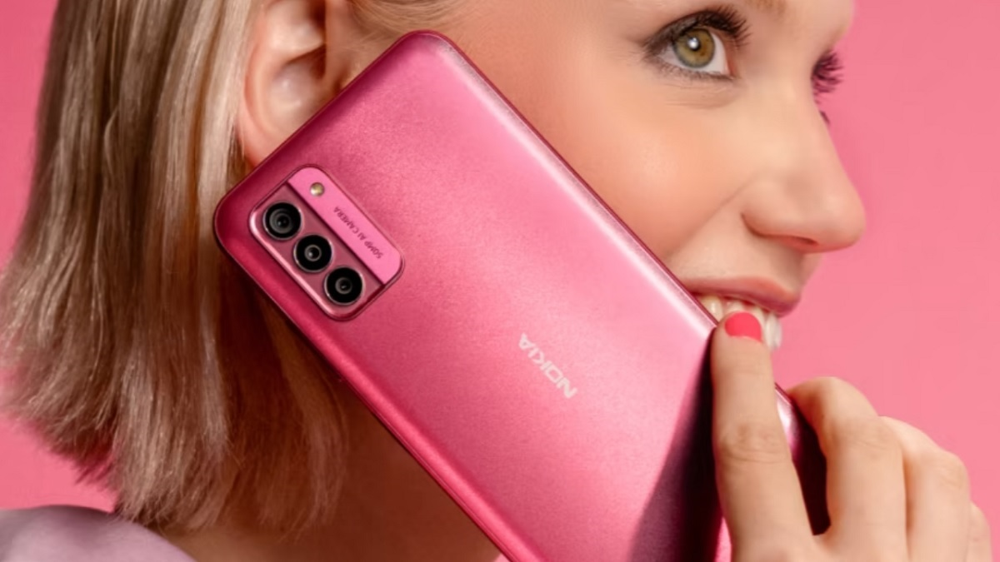

Apple iPhone
The iPhone is a line of smartphones produced by Apple Inc. that use Apple's own iOS mobile operating system. The first-generation iPhone was announced by then–Apple CEO Steve Jobs on January 9, 2007. Since then, Apple has annually released new iPhone models and iOS updates. As of November 1, 2018, more than 2.2 billion iPhones had been sold. The iPhone was the first mobile phone to use multi-touch technology.[3] Since the iPhone's launch, it has gained larger screen sizes, video-recording, waterproofing, and many accessibility features. Up to the iPhone 8 and 8 Plus, iPhones had a single button on the front panel, with the iPhone 5s and later integrating a Touch ID fingerprint sensor.[4] Since the iPhone X, iPhone models have switched to a nearly bezel-less front screen design with Face ID facial recognition, and app switching activated by gestures. Touch ID is still used for the budget iPhone SE series.
The iPhone is one of the two largest smartphone platforms in the world alongside Android, and is a large part of the luxury market. The iPhone has generated large profits for Apple, making it one of the world's most valuable publicly traded companies. The first-generation iPhone was described as a "revolution" for the mobile phone industry and subsequent models have also garnered praise.[5] The iPhone has been credited with popularizing the smartphone and slate form factor, and with creating a large market for smartphone apps, or "app economy". As of January 2017, Apple's App Store contained more than 2.2 million applications for the iPhone.
Samsung
Samsung Group[3] (Korean: 삼성; RR: samseong [samsʌŋ]; stylized as SΛMSUNG) is a South Korean multinational manufacturing conglomerate headquartered in Samsung Digital City, Suwon, South Korea.[1] It comprises numerous affiliated businesses,[1] most of them united under the Samsung brand, and is the largest South Korean chaebol (business conglomerate). As of 2020, Samsung has the eighth-highest global brand value.[4] Samsung was founded by Lee Byung-chul in 1938 as a trading company. Over the next three decades, the group diversified into areas including food processing, textiles, insurance, securities, and retail. Samsung entered the electronics industry in the late 1960s and the construction and shipbuilding industries in the mid-1970s; these areas would drive its subsequent growth. Following Lee's death in 1987, Samsung was separated into five business groups – Samsung Group, Shinsegae Group, CJ Group and Hansol Group, and JoongAng Group.
Notable Samsung industrial affiliates include Samsung Electronics (the world's largest information technology company, consumer electronics maker and chipmaker measured by 2017 revenues),[5][6] Samsung Heavy Industries (the world's second largest shipbuilder measured by 2010 revenues),[7] and Samsung Engineering and Samsung C&T Corporation (respectively the world's 13th and 36th largest construction companies).[8] Other notable subsidiaries include Samsung Life Insurance (the world's 14th largest life insurance company),[9] Samsung Everland (operator of Everland Resort, the oldest theme park in South Korea)[10] and Cheil Worldwide (the world's 15th largest advertising agency, as measured by 2012 revenues).
Xiaomi
Xiaomi Corporation (/ˈʃaʊmi/;[2] Chinese: 小米), commonly known as Xiaomi and registered as Xiaomi Inc., is a Chinese designer and manufacturer of consumer electronics and related software, home appliances, automobiles and household hardware. It is the second-largest manufacturer of smartphones in the world, behind Samsung,[3] most of which run on the MIUI (now HyperOS) operating system, which is based on the Android operating system. The company is ranked 338th and is the youngest company on the Fortune Global 500.[4][5] Xiaomi was founded in 2010 in Beijing by Lei Jun along with six associates. Lei had founded Kingsoft as well as Joyo.com, the latter of which he sold to Amazon for $75 million in 2004. In August 2011, Xiaomi released its first smartphone and, by 2014, it had the largest market share of smartphones sold in China.
Initially the company only sold its products online; however, it later opened brick and mortar stores.[6] By 2015, it was developing a wide range of consumer electronics.[7] In 2020, the company sold 149.4 million smartphones and its MIUI (now HyperOS) mobile operating system has over 500 million monthly active users.[8] As of 2023, Xiaomi is the third-largest seller of smartphones worldwide, with a market share of about 12%, according to Counterpoint.[9] Its presence led some people to call Xiaomi the "Apple of China".[10] It has come up with its own range of wearable items.[11] It also is a major manufacturer of appliances including televisions, flashlights, unmanned aerial vehicles, and air purifiers using its Internet of things and Xiaomi Smart Home product ecosystems. Xiaomi keeps its prices close to its manufacturing costs and bill of materials costs by keeping most of its products in the market for 18 months, longer than most smartphone companies.[12][13] The company also uses inventory optimization and flash sales to keep its inventory low.
Oppo
The brand name "Oppo" was registered in China in 2001 and launched in 2004 by Tony Chen in Dongguan, China. In 2005, they introduced their first device internationally, the Oppo X3 MP3 player. [2] Since then, the company has expanded to over 50 countries and become a major player in electronic devices around world.[2]  In June 2016, Oppo became the largest smartphone manufacturer in China,[3] selling its phones at more than 200,000 retail outlets.[4] In 2018, Oppo Digital announced that they were discontinuing their disc player business in major markets, and focusing on mobile devices.
Oppo was the top smartphone brand in China in 2019 and was ranked fifth in market share worldwide.[5] In 2021, Oppo announced that they were acquiring OnePlus, a major phone manufacturer. This deal was extended in 2022, with OnePlus becoming one of Oppo's subsidiaries and sharing major components with Oppo phones, processors, screens, and even the phones themselves. OnePlus will also essentially serve as Oppo's US outlet with similar phones within the OnePlus brand.
nokia
Nokia Corporation (natively Nokia Oyj in Finnish and Nokia Abp in Swedish,[5] referred to as Nokia)[a] is a Finnish multinational telecommunications, information technology, and consumer electronics corporation, established in 1865. Nokia's main headquarters are in Espoo, Finland, in the greater Helsinki metropolitan area,[3] but the company's actual roots are in the Tampere region of Pirkanmaa.[6] In 2020, Nokia employed approximately 92,000 people[7] across over 100 countries, did business in more than 130 countries, and reported annual revenues of around €23 billion.[4] Nokia is a public limited company listed on the Nasdaq Helsinki and New York Stock Exchange.[8] It was the world's 415th-largest company measured by 2016 revenues, according to the Fortune Global 500, having peaked at 85th place in 2009.[9] It is a component of the Euro Stoxx 50 stock market index.[10][11]
The company has operated in various industries over the past 150 years. It was founded as a pulp mill and had long been associated with rubber and cables, but since the 1990s has focused on large-scale telecommunications infrastructure, technology development, and licensing.[12] Nokia made significant contributions to the mobile telephony industry, assisting in the development of the GSM, 3G, and LTE standards. For a decade beginning in 1998, Nokia was the largest worldwide vendor of mobile phones and smartphones. In the later 2000s, however, Nokia suffered from a series of poor management decisions, and soon saw its share of the mobile phone market drop sharply. After a partnership with Microsoft and Nokia's subsequent market struggles,[13][14][15] in 2014 Microsoft bought Nokia's mobile phone business,[16][17] incorporating it as Microsoft Mobile.[18] After the sale, Nokia began to focus more on its telecommunications infrastructure business and on Internet of things technologies, marked by the divestiture of its Here mapping division and the acquisition of Alcatel-Lucent, including its Bell Labs research organization.
The company then also experimented with virtual reality and digital health, the latter through the purchase of Withings.[20][21][22][23] The Nokia brand returned to the mobile and smartphone market in 2016 through a licensing arrangement with HMD.[24] Nokia continues to be a major patent licensor for most large mobile phone vendors.[25] As of 2018, Nokia is the world's third-largest network equipment manufacturer.[26] The company was viewed with national pride by Finns, as its mobile phone business made it by far the largest worldwide company and brand from Finland.[27] At its peak in 2000, Nokia accounted for 4% of the country's GDP, 21% of total exports, and 70% of the Nasdaq Helsinki market capital